Conoce los servicios profesionales que ofrecemos en Imadigital Panoramic 3D.
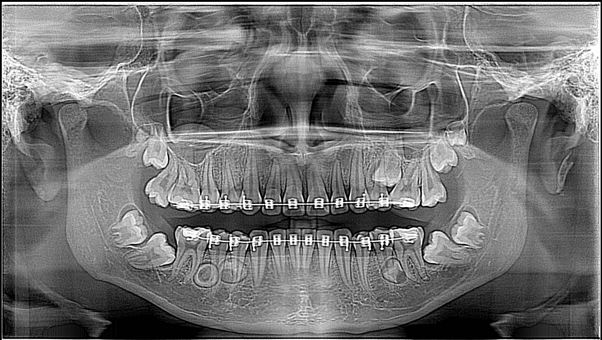
Visualiza toda la dentadura y maxilares para diagnósticos completos y precisos.
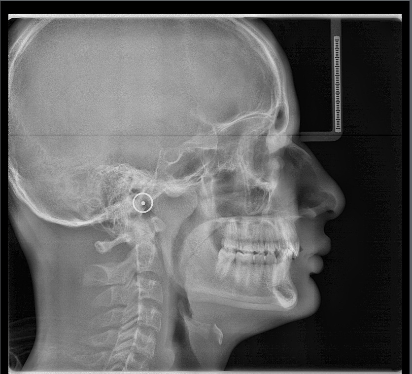
Permite analizar la relación entre maxilar y mandíbula, útil en ortodoncia.
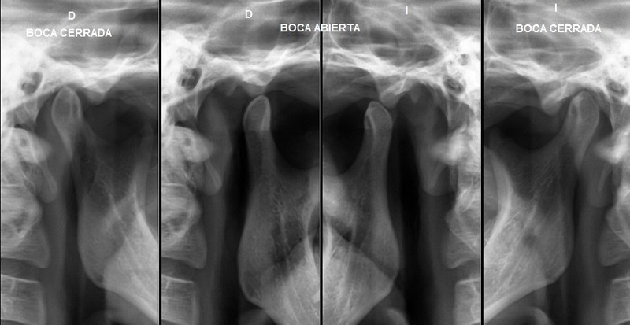
Estudio especializado para la articulación temporomandibular y sus movimientos.
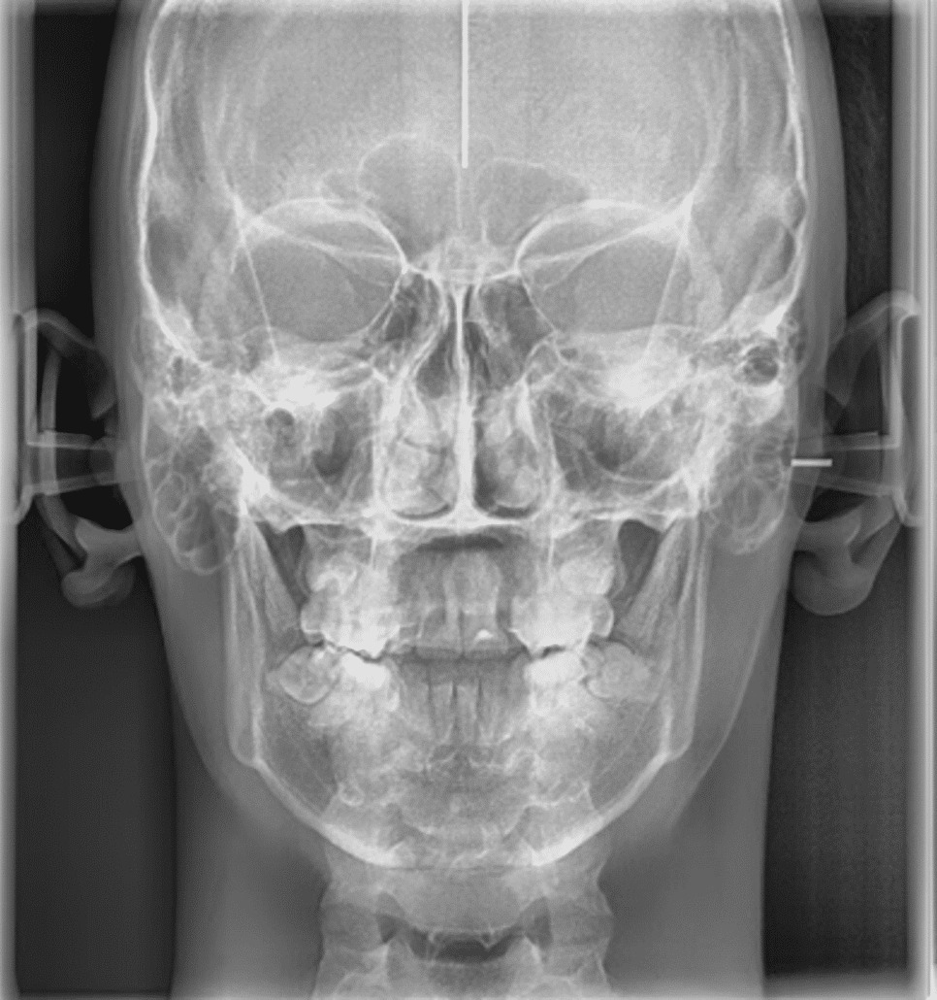
Estudio anteroposterior o posteroanterior para análisis de estructuras craneofaciales.
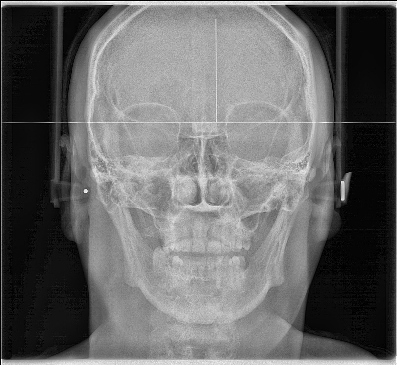
Permite evaluar los senos maxilares y estructuras adyacentes para diagnósticos precisos.
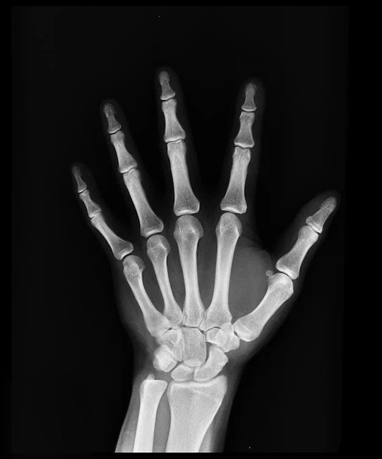
Permite evaluar huesos, articulaciones y tejidos blandos de la mano para diagnósticos precisos.
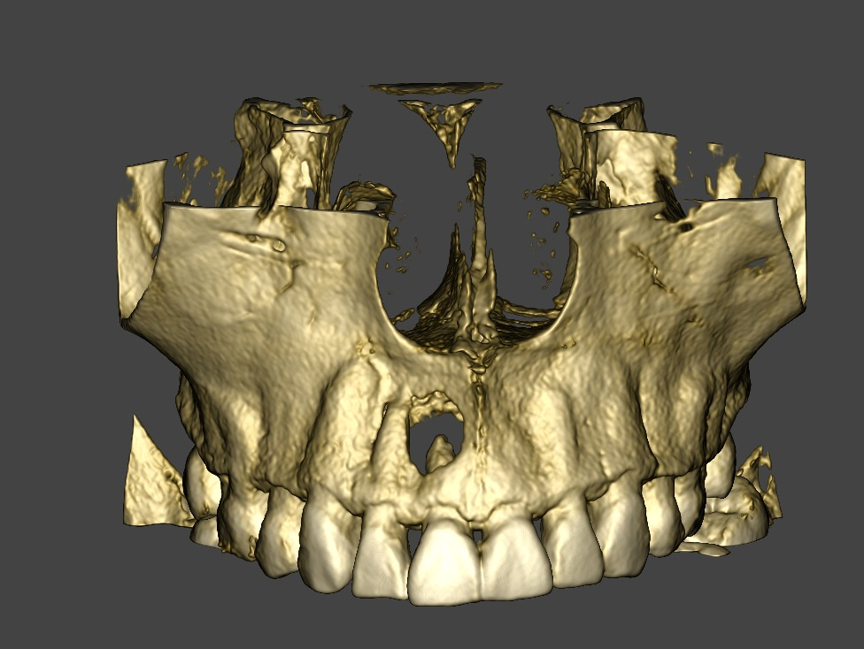
Imágenes tridimensionales del maxilar para diagnósticos precisos y planificación dental.
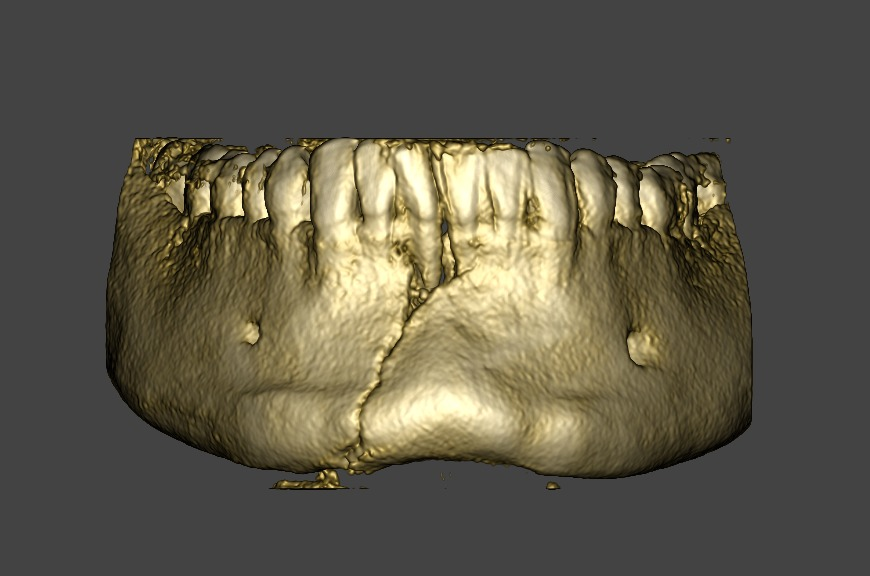
Estudio avanzado del área mandibular para planificaciones quirúrgicas y ortodónticas.
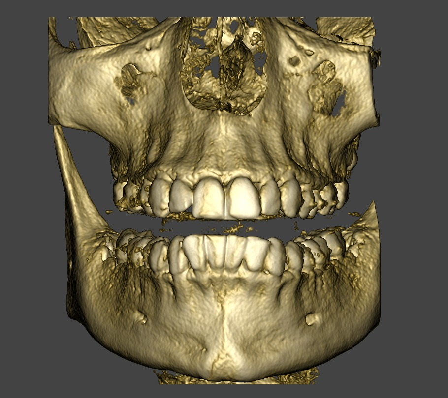
Evaluación completa de maxilares para diagnóstico integral y planificación de tratamientos.
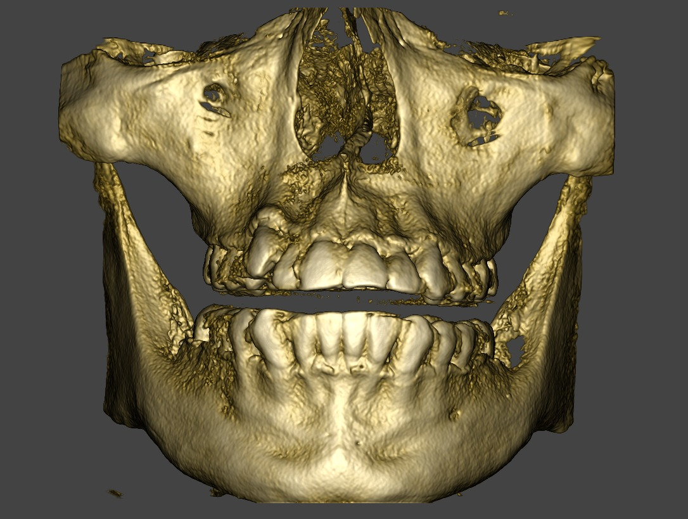
Permite capturar zonas extensas para estudios maxilofaciales completos.

Evaluación específica de 3 piezas dentales para diagnósticos detallados.

Imágenes detalladas de los senos maxilares para diagnósticos precisos.
.png)
Evaluación detallada de la articulación temporomandibular para diagnósticos precisos.
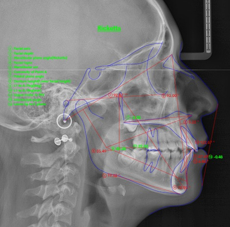
Estudio especializado para planificación ortodóntica y análisis craneofacial.